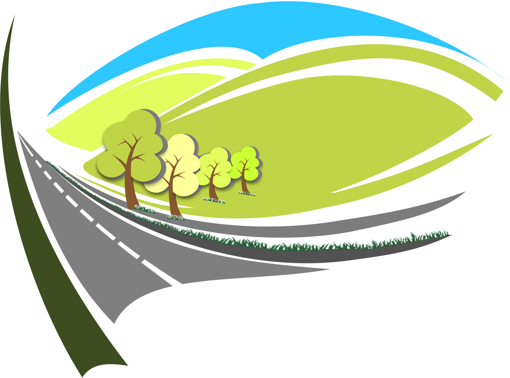
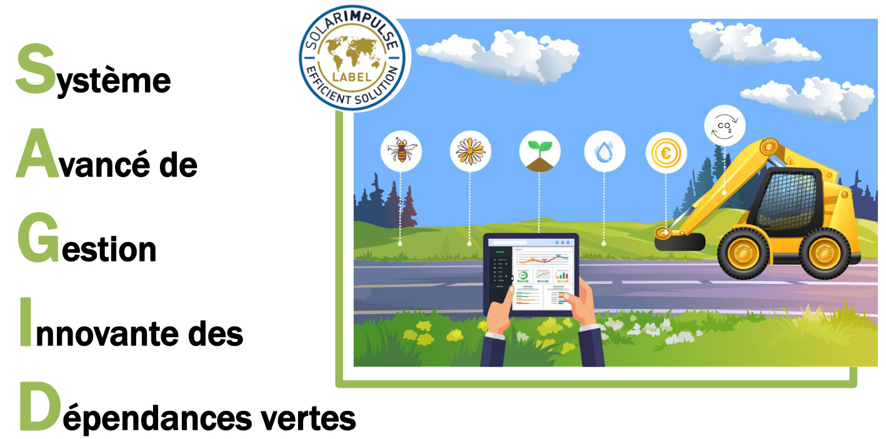
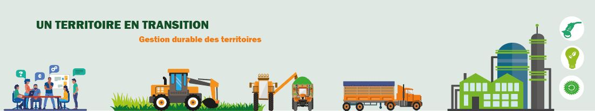

Les bords de Route!
Les infrastructures de transport, composées des voies de circulation et de leurs dépendances vertes, sont au cœur des préoccupations liées au développement durable des territoires. Elles impliquent simultanément des sujets liés à la préservation de l’environnement, ainsi que des éléments d’ordre économique associés au transport, à la sécurité routière et au cadre de vie entre autres.
Les conséquences des choix effectués par les acteurs publics, notamment en termes d’aménagement et d’entretien de ces espaces, se répercutent sur le long terme. En effet, une infrastructure de transport doit garantir un service aux usagers, notamment en matière d’accessibilité, temps de transport, confort, sécurité, tout en s’intégrant dans son environnement. Ces fonctions sociales, économiques et environnementales dépendent de la bonne qualité du milieu et donc des pratiques de gestion mises en œuvre sur le territoire.


Cette chaire porte une attention particulière aux dépendances vertes (bords de route) et s’intéresse à la mise en place d’une gestion de ces espaces végétalisés, ayant la capacité de mitiger les impacts négatifs de routes sur la biodiversité et jouer un rôle fondamental pour son maintien. Cependant, à l’heure actuelle, les diverses parties prenantes à l’échelle d’un territoire ne disposent pas de méthodologies/modèles opérationnels leur permettant de prendre en compte et d’évaluer simultanément l’ensemble des enjeux évoqués préalablement.
Des études récentes ont démontré que la recherche actuelle sur la gestion des bords de route était abordée de manière fragmentée et disciplinaire. Elles ont également mis en évidence un manque de modèles formels permettant la prise en compte de la complexité d’un tel système et l’intégration des données provenant de sources et de disciplines diverses.
L’objectif global de la chaire est de développer des outils et méthodes dits « clés en main » capables d’évaluer la durabilité des pratiques mises en œuvre lors du processus de décision soutenus par l’intelligence artificielle, pour ensuite contribuer à l’intégration du métier dans les filières de la bioéconomie et à l’évolution des comportements écoresponsables.
Ainsi, elle bénéficie de l’expertise scientifique des laboratoires ERPI, LORIA et SILVA, de l’expertise industrielle du groupe ACTIBAC, spécialisé dans la gestion des dépendances vertes par l’intermédiaire des entreprises NOREMAT et ACCOPILOT et de la Métropole du Grand Nancy. Mots clés : dépendances vertes, gestion durable, évaluation de la durabilité, transition numérique

Objectifs Opérationnels
- Renforcer les connaissances sur les bords de Route
- Développer des outils et méthodes capables d’évaluer la durabilité des pratiques de gestion des bords de route
- Accompagner la gestion et l’action publique en faveur des bords de route
Axes de Recherche
- Améliorer les performances économiques, environnementales et socio-territoriales des bords de route
- Soutenir des comportements écoresponsables en termes de gestion des bords de route
- Intégrer le métier d’accoroutiste dans les filières de la bioéconomie